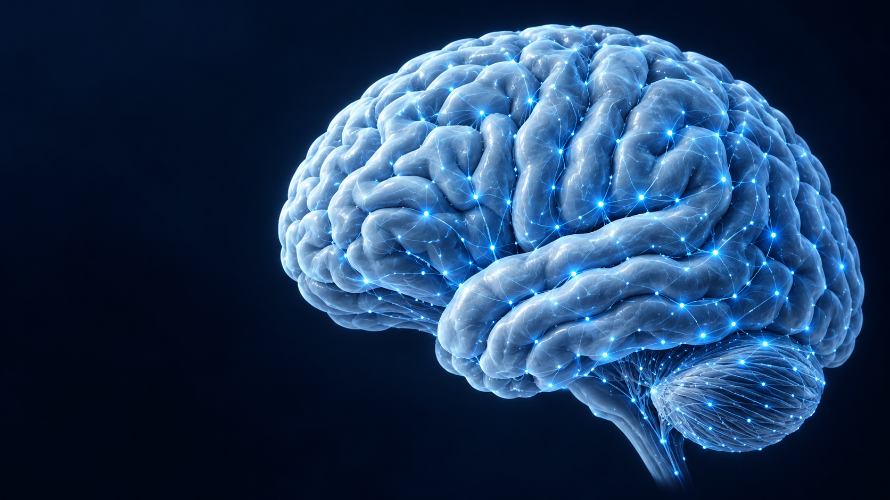
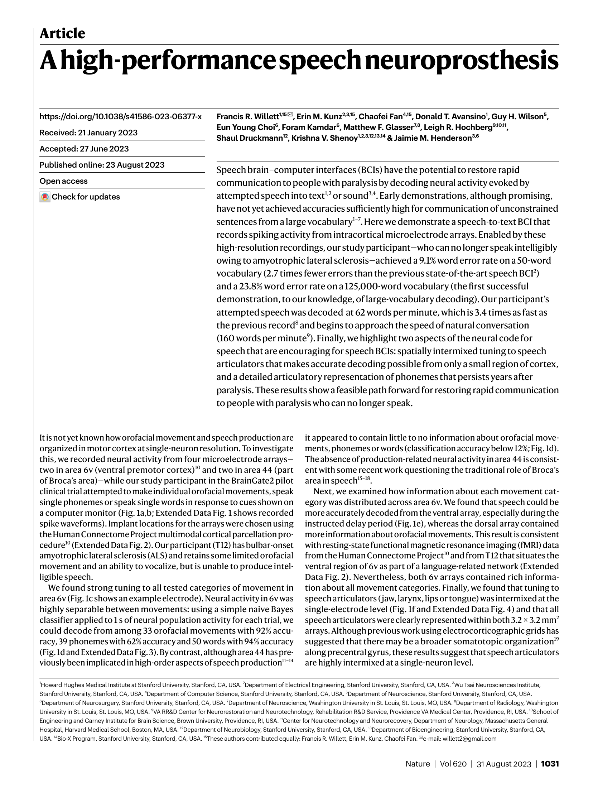
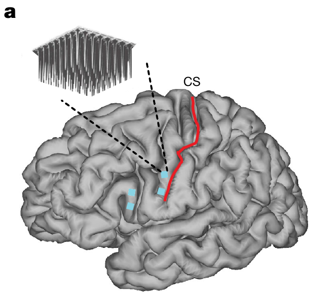
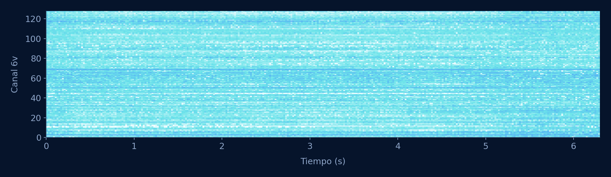
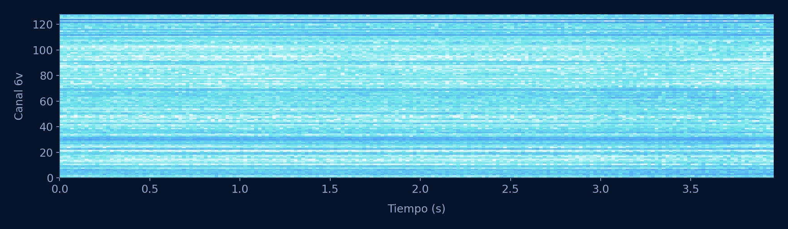
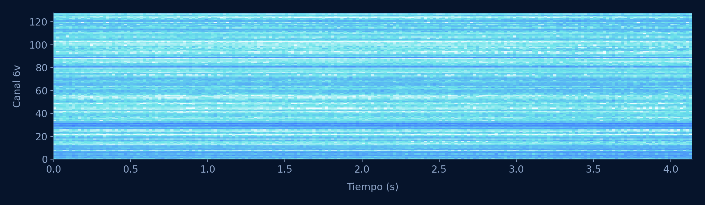

Willett y colaboradores · Nature, 2023
Decodificar el habla intentada
Asier Aurre Trabajo Integrado

Las interfaces cerebrales ya abrían una puerta.
La conversación seguía teniendo que pasar por la escritura.
La actividad relacionada con el habla se convierte en texto.

Electrodos implantados
Detalle de la figura 1aActividad neuronal
Ejemplo real · 4 canales de 6vAprender la secuencia de sonidos
T12 · competitionData
Grabaciones públicas de Dryad



Las señales cambian. El modelo tiene que adaptarse.
De la actividad neuronal a los fonemas y las palabras, en una línea temporal.
Menos errores sin perder estabilidad entre sesiones.
Transiciones entre fonemas
Mejorar el modelo de lenguaje